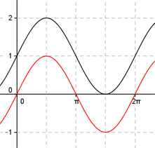

Aufgabe 239 Bestimmen Sie d für den dargestellten Graphen der Form y = a * sin (b * (x + c)) + d.  Abgelesen: Periode = 2п 2п 2п |b| = ---- = ---- = 1 --> p 2п Keine Spiegelung an y = 1 --> b = 1 --> asin(x + c) + d Verschiebung von Punkt (0|0) in (0|1) --> Abgelesen: Verschiebung entlang der y-Achse um 1 --> d = 1 asin(x + c) + 1 Abgelesen: Keine Verschiebung entlang der Parallele zur x-Achse duch y = 1 --> c = 0 asin(x) + 1 Abgelesen: |a| = 1 Keine Spiegelung an y = 1 --> a = 1 --> y = sin(x) + 1. Zum Vergleich: sin x